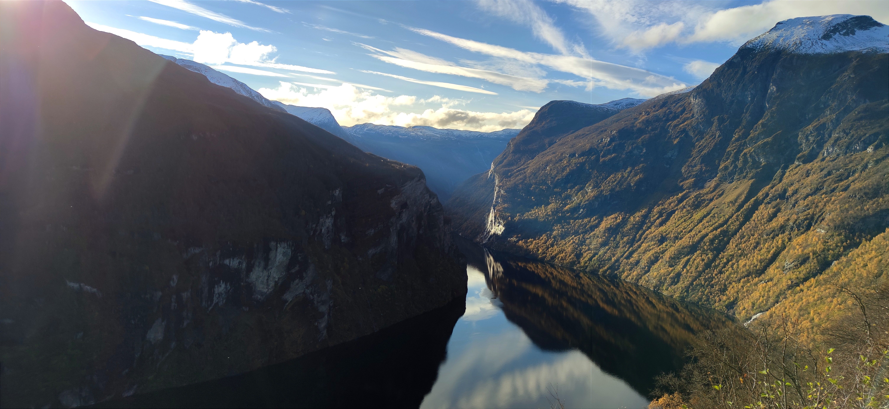
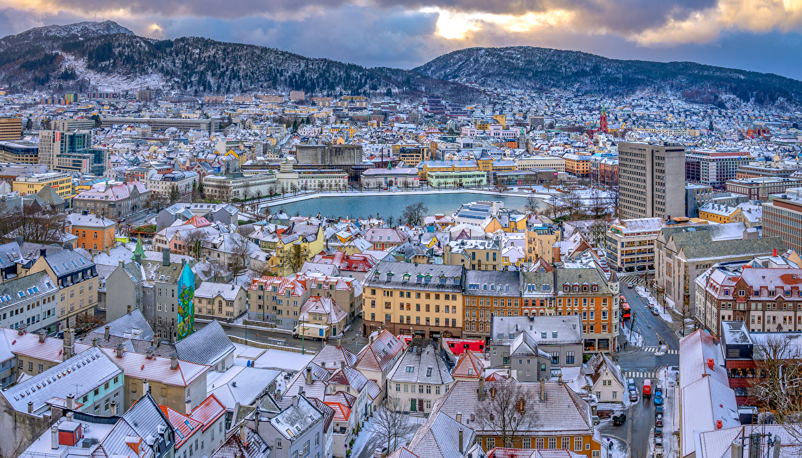
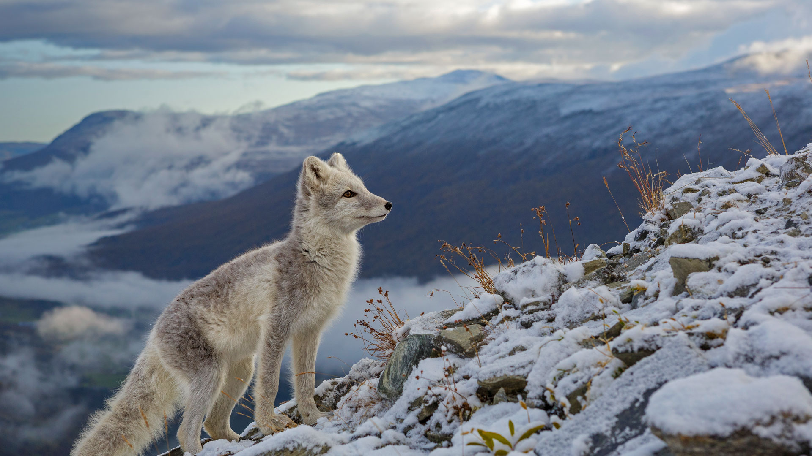
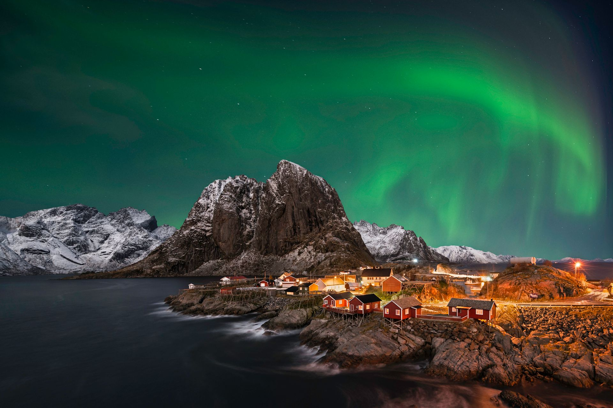
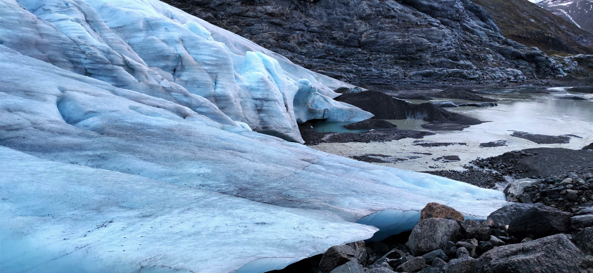
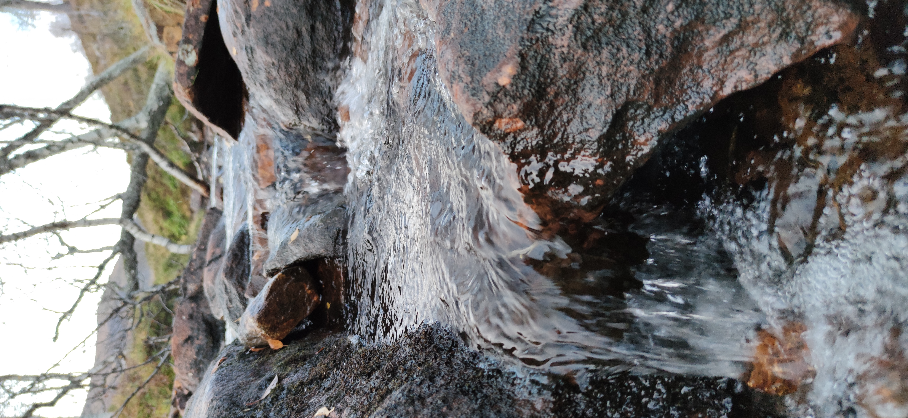
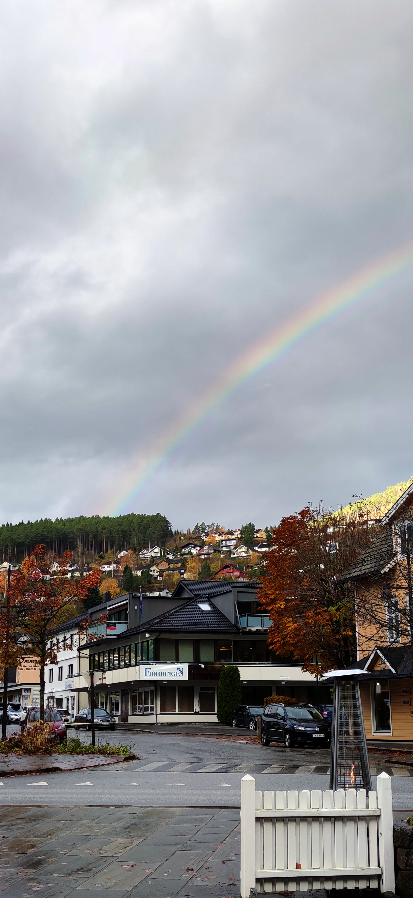
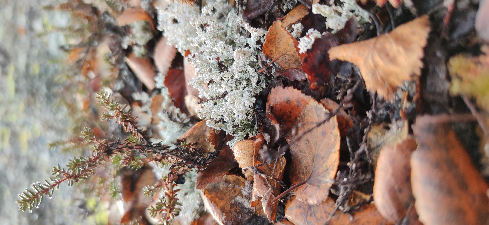

Les fjords de Norvège sont l'une des merveilles naturelles les plus spectaculaires du monde. Ces paysages époustouflants composés de montagnes imposantes, de cascades vertigineuses et de fjords étroits et profonds offrent une expérience unique. Que vous souhaitiez faire de la randonnée, du kayak, de la croisière ou simplement admirer les vues à couper le souffle, les fjords norvégiens ne manqueront pas de vous impressionner. De plus, la région offre également une riche culture locale, des villes pittoresques et des activités saisonnières telles que l'aurore boréale en hiver. Un voyage dans les fjords de Norvège est donc une expérience inoubliable pour tous les amateurs de nature et de paysages grandioses.
Oslo est une ville fascinante qui offre une combinaison unique de nature et de culture. Avec ses musées de classe mondiale, son architecture avant-gardiste et sa scène culinaire en plein essor, Oslo est une destination incontournable pour tout amateur de culture et de gastronomie. De plus, la ville est entourée de magnifiques paysages naturels, comme les fjords et les collines verdoyantes, qui offrent une multitude d'activités en plein air telles que la randonnée, le vélo et le ski en hiver. Que vous soyez intéressé par l'art, la culture, la nature ou tout simplement en quête d'aventure, Oslo est une ville qui saura vous surprendre et vous charmer.

https://www.wallpaperup.com/1401280/Norway_Houses_Mountains_Oslo_Roof_From_above.html
Google Maps
La Norvège abrite une faune diversifiée et fascinante, avec des espèces telles que l'ours polaire, le renard polaire, le glouton, le renne, l'élan, le lynx et bien d'autres encore. La côte norvégienne est également célèbre pour ses baleines, dauphins et phoques, tandis que les forêts et les montagnes regorgent d'oiseaux tels que les aigles, les faucons et les hiboux. Les vastes étendues sauvages de la Norvège offrent des opportunités uniques d'observer ces animaux dans leur habitat naturel. Que vous soyez un passionné de nature, un photographe animalier ou simplement curieux de découvrir la faune norvégienne, vous serez émerveillé par la richesse et la beauté de cette vie sauvage.
https://peapix.com/bing/26028
Google MapsLes aurores boréales sont des phénomènes lumineux naturels qui illuminent le ciel nocturne. Ces spectaculaires formations lumineuses sont causées par l'interaction de particules chargées du soleil avec la magnétosphère terrestre. La Norvège est l'un des meilleurs endroits au monde pour observer les aurores boréales, avec des zones d'observation idéales dans l'Arctique, loin des lumières de la ville. Les aurores boréales peuvent être observées de septembre à mars, avec des pics d'activité en décembre et janvier. En plus de l'observation des aurores boréales, les visiteurs peuvent également profiter de nombreuses activités hivernales, telles que la motoneige, la luge, le ski de fond et la pêche sur glace. Une expérience unique et magique à ne pas manquer pour tous les amateurs de nature et de phénomènes extraordinaires.

Aurores boréales - Norvège @iStock
Google Maps
Un glacier en Norvège est une expérience unique qui ne peut être comparée à rien d'autre. La majesté et la beauté de ces énormes formations glacées sont à couper le souffle. Le glacier de Briksdal, situé dans la région de Sogn og Fjordane, est l'un des plus populaires à visiter. Ce glacier est entouré de paysages à couper le souffle, avec des vallées glaciaires profondes, des cascades et des sommets enneigés. Vous pouvez prendre une randonnée guidée jusqu'au glacier ou faire une excursion en bateau sur le lac à proximité pour avoir une vue d'ensemble. Si vous êtes chanceux, vous pourrez même apercevoir la faune locale, comme les rennes et les aigles royaux. Un voyage pour voir un glacier en Norvège est une expérience inoubliable qui vous laissera des souvenirs durables de la nature majestueuse.
Les Norvégiens locaux sont accueillants, chaleureux et respectueux. Ils sont fiers de leur culture riche et de leur mode de vie en harmonie avec la nature. Les Norvégiens sont également connus pour leur sens aigu de l'égalité, de la liberté et de la responsabilité sociale. Ils attachent une grande importance à la préservation de leur environnement naturel et sont fiers de partager leur amour pour la nature avec les visiteurs. Vous pourrez rencontrer des Norvégiens locaux dans les villes animées ou dans les régions plus reculées, et ils seront toujours prêts à vous aider et à vous faire découvrir leur culture unique.



Les photographies sans sources libres de droit